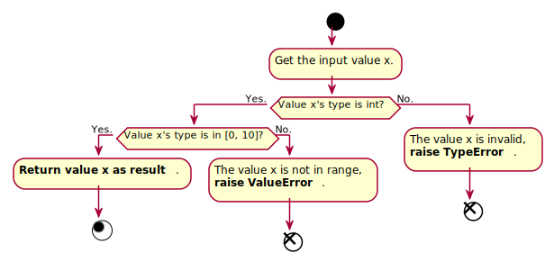
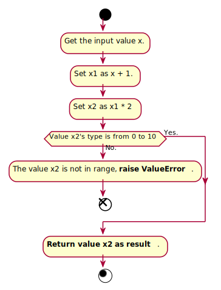
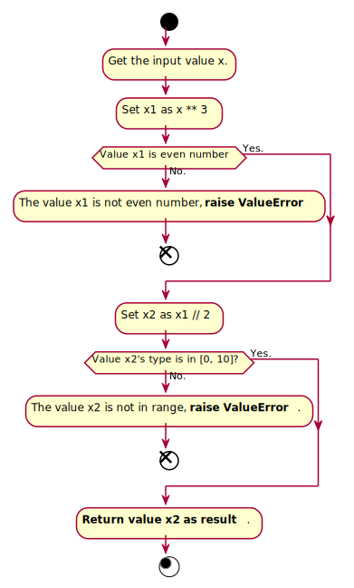
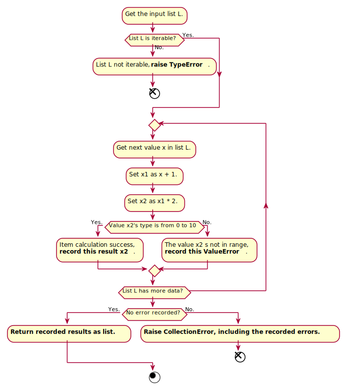
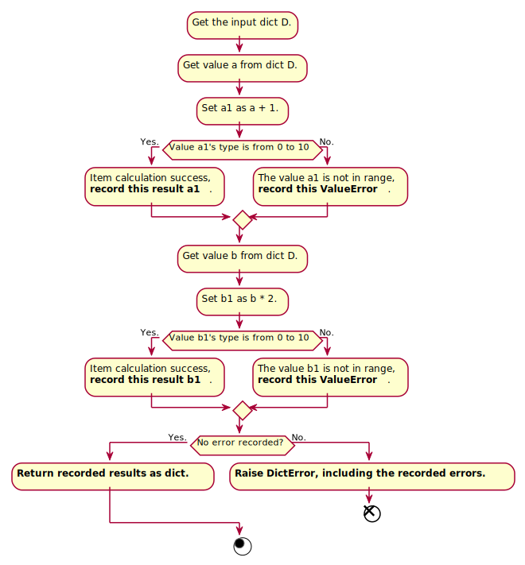
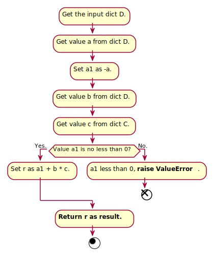

Loader Calculation Process¶
In this part, the calculation process of the common loaders will be introduced according to several samples and diagrams.
is_type & to_type¶
is_type and to_type are 2 visual-similar loader functions, but actually they are different. By showing their difference, some design logic can be shown.
itype = is_type(int)
otype = to_type(int)
In the code above, what will happen when we call these loaders?
When itype is called, this is the flow chart of the calculation

The calculation process is to check the type of value x, so the result should be
itype(1) # 1
itype(0) # 0
itype(0.1) # TypeError
itype('+1') # TypeError
When otype is called, this is the flow chart of the calculation
The calculation process is to transform value x to int, so the result should be
otype(1) # 1
otype(0) # 0
otype(0.1) # 0
otype('+1') # 1
This is the core logic of the loader framework, it is function-liked, whatever you want to do are included in loaders like itype and otype.
or & and & pipe¶
Another core usage of the loader framework is the or, and and pipe operations, which can form complex load logic by compositing several single loaders.
When or is used, the code should like this
l = is_type(int) | is_type(float)
The flow chart of calculation is

When is_type(int) is ok, the value x will be returned directly as result. If x is not int, but it it a float object, the value x will be returned as well. But when its type is neither int not float, TypeError will be raised. So the result should be
l(1) # 1
l(1.1) # 1.1
l('+1') # TypeError
When and is used, the code should like this
l = is_type(int) & interval(0, 10)
The flow chart of calculation is
When is_type(int) is not ok, TypeError will be directly raised. If the type is correct, it will check whether the value x is from 0 to 10. So the result should be
l(1.1) # TypeError
l(1) # 1
l(10) # 10
l(11) # ValueError
l(11.1) # TypeError
When pipe is used, the code should like this
l = minus(1) >> multi(2) >> interval(0, 10)
The flow chart of calculation is
So the result should be
l(1) # 4
l(4) # 10
l(5) # ValueError, because (5 + 1) * 2 = 12 > 10
Turn common function to loader¶
It is easy to define your own calculation. You can just define a function and wrap it by Loader. For example,
def func(x):
if x % 2 == 1:
raise ValueError('not even number')
return x // 2
The function func can be wrapped and used like this
lfunc = Loader(func)
l = power(3) >> lfunc >> interval(0, 10)
The flow chart of l should be
So the calculation result should be
l(0) # 0
l(1) # ValueError, 1 not even number
l(2) # 4
l(3) # ValueError, 27 not even number
l(4) # ValueError, 32 not in range [0, 10]
Also, Loader can be used as decorator
@Loader
def func(x):
if x % 2 == 1:
raise ValueError('not even number')
return x // 2
l = power(3) >> func >> interval(0, 10)
The loader l has exactly the same logic.
Collection support¶
Loader provides support for collection (such as list and dict) as well. For example,
Collection mapping
l = collection(plus(1) >> multi(2) >> interval(0, 10))
The flow chart is
So the calculation result should be
l([1, 2]) # [4, 6]
l([2, 3, 4]) # [6, 8, 10]
l([2, 3, 5]) # CollectionError, 5 has ValueError
l([5, 6, 3]) # CollectionError, 5, 6 has ValueError
Dict generation
l = dict_(
a=item('a') >> plus(1) >> interval(0, 10),
b=item('b') >> multi(2) >> interval(0, 10),
)
The flow chart is
So the calculation result should be
l({'a': 1, 'b': 2}) # {'a': 2, 'b': 4}
l({'a': -1, 'b': 4}) # {'a': 0, 'b': 8}
l({'a': -10, 'b': 6}) # DictError, 'a', 'b' has ValueError
Norm math and function support¶
Sometimes we need to do some complex math calculation, so the functions like plus, minus, multi`are not so convenient. `norm can be used at this time.
l1 = Loader((norm(keep()) + 1) * 2) >> interval(0, 10)
l2 = minus(1) >> multi(2) >> interval(0, 10)
l1 and l2 are exactly the same.
In the more complex cases, we can also wrap function into norm by normfunc.
def func(a, b, c):
if a < 0:
raise ValueError
return a + b * c
l = func(-norm(item('a')), item('b'), item('c'))
The flow chart of l should be
So the calculation result should be
l({'a': 1, 'b': 2, 'c': 3}) # ValueError
l({'a': -1, 'b': 2, 'c': 3}) # 7
Also, normfunc can be used as decorator.
@normfunc
def func(a, b, c):
if a < 0:
raise ValueError
return a + b * c
l has exactly the same logic.
ATTENTION: PLEASE clearly differ the usage `Loader` and `norm` when they are both used in order to avoid the misuses.